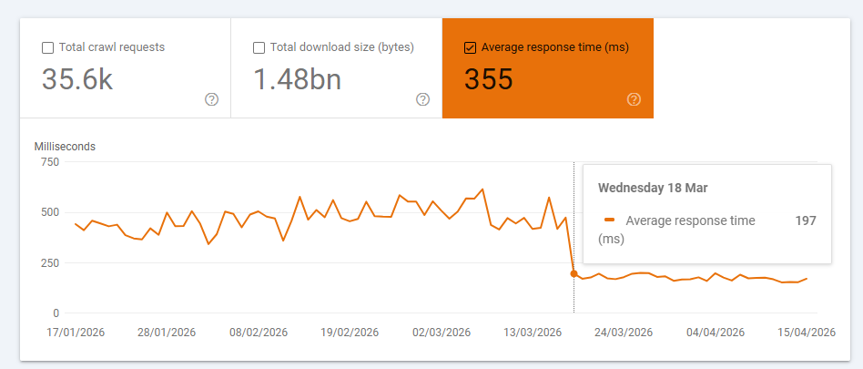
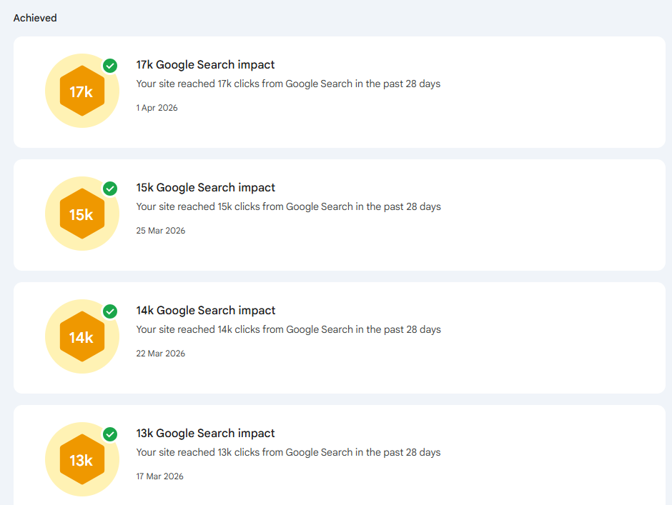
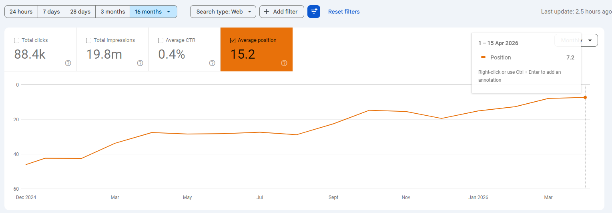

Google organic clicks tripled. Rankings moved from page 2 to page 1.
GSC clicks 5,431 → 18,204 (+235%). Impressions up 213%. Avg position 14.9 → 7.8. AI search referrals: 1,429 sessions across ChatGPT, Perplexity, Gemini, Copilot, Claude — growing MoM.
- Organic traffic tripled in 90 days.Clicks 5,431 → 18,204. Impressions 1.64M → 5.15M. Avg position 14.9 → 7.8 — page 2 to page 1.
- Commercial keywords climbed meaningfully."AI recruitment software" 37 → 17. "AI hiring software" 41 → 14. "AI screening" 32 → 3.6. Four new commercial keywords entered in February: AI sourcing, AI hiring platform, AI applicant tracking system, AI in recruiting.
- AI search is now a real traffic source.1,429 sessions in Q1 from ChatGPT, Perplexity, Gemini, Copilot, Claude. ChatGPT alone: 179 → 388 → 483 MoM.
- Lead attribution is the open gap.HubSpot → Freshsales migration left UTM capture unwired on 15 forms, so 99.8% of new contacts land as "Unknown." Freshsales shows 348 new contacts in March + 21 Q1 deals. Fix this and we close the loop.
| Month | GSC Clicks | GSC Impressions | Avg Position | GA4 google/organic |
|---|---|---|---|---|
| Jan 2026 | 5,431 | 1,644,057 | 14.9 | 6,077 |
| Feb 2026 | 8,382 | 2,276,523 | 12.5 | 10,650 |
| Mar 2026 | 18,204 | 5,147,901 | 7.8 | 19,017 |
| Δ Jan → Mar | +235% | +213% | +7.1 pos | +213% |
GA4 google/organic column uses source/medium dimension (not channel grouping) — this cross-validates with GSC clicks to within 5% in March.
| Source | Jan | Feb | Mar | Δ Jan → Mar |
|---|---|---|---|---|
| Google organic (GSC clicks) | 5,431 | 8,382 | 18,204 | +235% |
| Google organic (GA4 validation) | 6,077 | 10,650 | 19,017 | +213% |
| Bing organic | 678 | 786 | 893 | +32% |
| Google paid (cpc) | 25,412 | 41,103 | 28,342 | +12% |
| Bing paid (cpc) | 12,918 | 5,677 | 6,928 | −46% |
| Direct | 8,463 | 10,946 | 12,988 | +53% |
Money keywords — rankings climbed meaningfully
New commercial keywords — first appearances in February 2026
These queries had zero impressions in January. They started ranking in February or March, matching content ship dates. Current positions are entry-level but trending upward.
| Platform | Jan | Feb | Mar | Q1 total | Δ Jan → Mar |
|---|---|---|---|---|---|
| chatgpt.com | 179 | 388 | 483 | 1,050 | +170% |
| perplexity.ai | 55 | 62 | 65 | 182 | +18% |
| gemini.google.com | 15 | 29 | 35 | 79 | +133% |
| copilot.microsoft.com + copilot.com | 40 | 27 | 17 | 84 | −58% |
| claude.ai | 1 | 12 | 21 | 34 | +2,000% |
| Total AI referrals | 290 | 518 | 621 | 1,429 | +114% |
Organic Traffic — Jan 1 → Apr 1 (Ahrefs)
| Site | Jan 1 | Feb 1 | Mar 1 | Apr 1 | Δ Jan → Apr |
|---|---|---|---|---|---|
| x0pa.com | 8,649 | 9,039 | 17,185 | 30,385 | +251% |
| smartrecruiters.com | 154,273 | 161,296 | 156,184 | 147,586 | −4% |
| eightfold.ai | 30,219 | 32,744 | 33,814 | 31,988 | +6% |
| impress.ai | 487 | 499 | 557 | 492 | +1% |
Organic Keyword Count — Jan 1 → Apr 1 (Ahrefs)
| Site | Jan 1 | Feb 1 | Mar 1 | Apr 1 | Δ Jan → Apr |
|---|---|---|---|---|---|
| x0pa.com | 2,497 | 3,073 | 5,639 | 6,462 | +159% |
| smartrecruiters.com | 34,995 | 48,722 | 46,552 | 29,469 | −16% |
| eightfold.ai | 7,427 | 7,418 | 6,701 | 4,944 | −33% |
| impress.ai | 124 | 100 | 88 | 74 | −40% |
X0PA Referring Domains — Monthly
| Date | Referring domains | Net new |
|---|---|---|
| Jan 1, 2026 | 986 | — |
| Feb 1, 2026 | 995 | +9 |
| Mar 1, 2026 | 1,013 | +18 |
| Apr 1, 2026 | 1,033 | +20 |
- Removed Elementor dependency entirely. Pages now ship clean, faster HTML — no page-builder overhead, smaller JS payload, cleaner DOM for crawlers.
- Server response time dropped from 400–600 ms to under 200 ms (since 18 March). Faster response = more pages Googlebot crawls per session = more of the site indexed, faster.
- Average keyword ranking is the highest in 16 months and still climbing. 16-month trajectory: position 45 → 7.2 on a volume-weighted basis — driven by the SEO work shipped this quarter.



-
Launch 58 feature pages in 40 days.
One page per day under
/features/. Every card on the features hub gets its own dedicated page — targeted commercial keywords per page (job posting, recruitment dashboard, candidate screening, AI interview, candidate matching, etc.). - Integrated Google Ads + SEO strategy. Audit every paid-bidding keyword and map it against organic coverage. Where we already rank, pause or reduce paid. Where we don't, use paid to reach the top while organic catches up. Single spreadsheet feeds both teams.
- Commercial keyword push to page 1. "AI recruitment software" (17), "AI hiring software" (14), "AI recruiter" (5) — all within striking distance. On-page optimization + internal links from the 58 new feature pages. Target: one into top 3 by end of May.
- Enable CDN for page speed. Builds on the 200 ms response-time win. CDN adds edge caching across geographies — further improves Core Web Vitals and international search performance.
-
Fix attribution (HubSpot → Freshsales UTM gap).
Deploy UTM capture on the 15 lead-capture forms, map to
cf_traffic_sourcein Freshsales. May report then includes organic-attributed contact and deal volume for the first time.
Google Analytics 4 (session, channel, source/medium, key events) · Google Search Console (clicks, impressions, position, monthly calendar view) · Ahrefs Site Explorer (organic traffic, keyword count, referring domains — monthly snapshots on day 1 of each month) · Ahrefs Brand Radar (AI citation counts as of 17 April 2026) · Freshsales CRM (contact and deal volume, read-only). All numbers in this report can be re-derived from these sources.